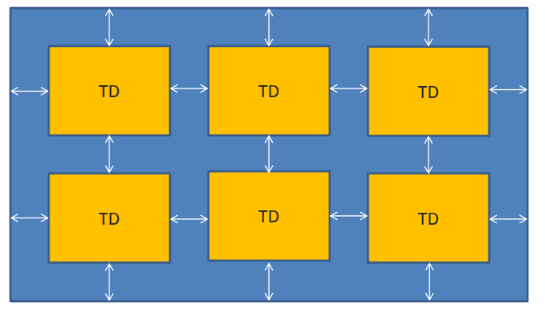
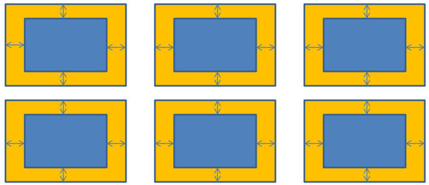
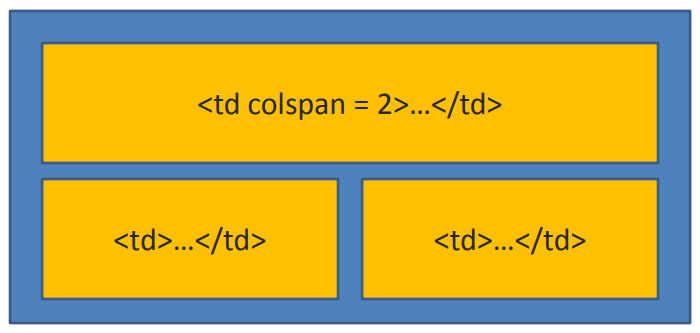
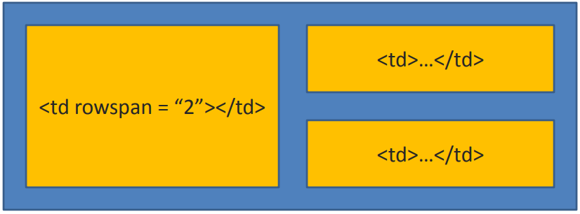

Тег <table>є основним контейнером, у який поміщається таблиця. Саме
у ньому вказуються всі атрибути для таблиці та розміщується вся розмітка таблиці.
Таблиця часто використовується для візуалізації табличних даних, а також застосовується для реалізації верстки певних сторінок.
Іноді весь каркас сторінки будується за допомогою таблиць, але останнім часом ця техніка застосовується рідко.
<tr>, <td>
Таблиця складається з рядків (тег <tr> ... </tr> ): MDN: The Table Row element,
які,
своєю чергою,
складаються з комірок
(тег <td> ... </td>): MDN: The Table Data Cell
element, Tags tr, td code example.
<th>
<th>...</th> - тег, який описує спеціальний вид комірок, заголовних комірок.
При цьому текст усередині цих клітинок вважається більш важливим, ніж простих, і
набуває особливих властивостей - текст центрується та отримує напівжирне
накреслення:
MDN The
Table
Header
element, Tag th code example.
<caption>
Тег <caption></caption> - назва таблиці, яка розміщується зверху над
таблицею і вирівнюється по центру.
Сам тег слід розмістити одразу після відкриваючого тега <table>.
MDN docs: The Table Caption
element, Tag caption code example
Не слід залишати порожні комірки, оскільки в деяких браузерах вони будуть
відображені некоректно і згодом вплинуть на візуалізацію всієї таблиці.
Якщо Вам справді необхідно залишити їх порожніми, розмістіть там пробіл,
вказавши його код
<table>
Тег <table>, як і інші теги, має свої особливі атрибути:
Атрибут таблиці cellspacing говорить про відступи між комірками таблиці та відступи від меж комірок до меж самої таблиці.
Атрибут таблиці cellpadding говорить про відступи всередині комірок, тобто відступи від меж комірок до вмісту.
Атрибут таблиці cellspacing говорить про відступи між комірками таблиці та відступи від меж комірок до меж самої таблиці.
Атрибут rowspan встановлює число клітинок, які мають бути об'єднані по вертикалі. Цей атрибут має сенс для таблиць, що складаються з декількох рядків.

Тег <ol></ol> є контейнером для впорядкованих списків, так і
розшифровується – ordered list.
Усі елементи списку розміщують усередині тегів <li>...</li>, які у свою чергу
поміщаються у загальний контейнер <ol></ol>.
Усі списки мають атрибут type, який вказує тип маркера. Впорядковані списки можуть приймати такі значення:
Тег
<ul></ul>
є контейнером для неупорядкованих списків, так і
розшифровується – unordered list.
Усі елементи списку полягають усередині тегів
<li></li>
, які у свою чергу
поміщаються у загальний контейнер
<ul></ul>
.
Усі списки мають атрибут type, який вказує тип маркера. У невпорядкованих списків може приймати такі значення:
У елементи списку можна вкладати не лише текстовий вміст, а й інші списки. Таким чином будуть реалізовані вкладені списки, а точніше підписки.
При цьому за умовчанням у вкладених списках маркер буде відмінним від маркера головного список.
Code example nested listsІснують спеціальні списки для визначень, для цього слід використовувати
контейнер <dl>...</dl>.
Елементи таких списків складаються з двох складових: перша – це сам термін,
укладений у тег <dt>...</dt>, другий – саме визначення, вкладене у тег
<dd>...</dd>.